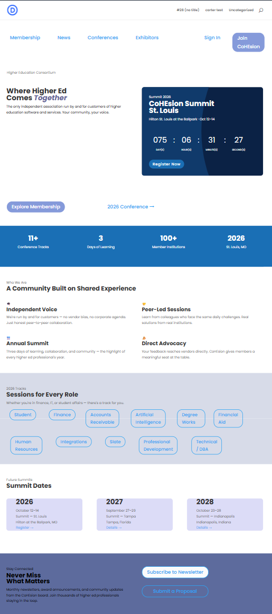

Shadow Days
Three extra days at the end of the internship, spent outside the structured weekly rotation shadowing the Marketing team’s Senior Developer and Analytics group in their normal day-to-day work.
01Summary
Beyond the Week 4 Marketing rotation, I extended the internship by three days to shadow the Marketing team more closely, working one-on-one with their Senior Developer on the Analytics side of the department. Their main project was a brand and website rebuild for one of Evisions’ partners, CoHEsion, built in WordPress with the Divi page builder theme. I also sat in on a few of the department’s regular working meetings outside the usual intern schedule.
02What I Worked On
- WordPress & Divi fundamentalsGot a walkthrough of how Evisions runs WordPress (a managed host, a child theme built on Divi so updates never overwrite custom work) and how Divi itself structures a page: sections containing rows, rows containing columns, columns containing modules.
- Practicing in the Divi editorBuilt and styled practice sections and modules directly in the editor to get comfortable with it, including a countdown module for a conference registration page.
- Email preferences projectSat in on planning for a new marketing email preference center: turning flat opt-in lists into categories, and deciding what a contact should see versus what stays internal.
- Marketing & sales meetingsJoined a marketing/sales weekly tactical meeting and an internal marketing meeting covering lead-routing automation and email volume across the contact list.
03Recreating the Mock Design
The CoHEsion rebuild was being built against a mock design. As a first-time WordPress and Divi user, I used it as a practice exercise: try to rebuild the homepage as closely to the mock as I could.

Getting close to the mock took a lot longer than expected. Just getting comfortable navigating Divi’s section/row/column/module structure took most of a session, well before worrying about matching spacing and layout precisely. This was a practice pass for my own learning, not the real rebuild, which the Senior Developer was still finishing.
04Reflection
Divi’s structured, section-by-section model felt restrictive at first compared to a freeform tool, but it clicked once I saw why a marketing team without a full-time engineer needs a page builder over hand-coded pages: it can be maintained without touching code. Sitting in on the email preferences and marketing meetings was its own lesson, showing how much coordination it actually takes to keep something as ordinary-looking as a marketing email from turning into overload for the person receiving it.
05Skills
- WordPress & Divi
- CMS Page Building
- Cross-Team Observation
- Marketing Operations